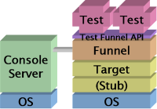
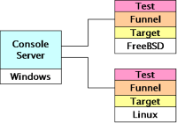
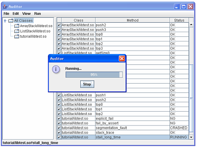
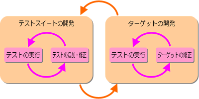

Test Funnel
GCC専用のC言語ユニットテストフレームワークです。
概要
Test Funnelはテスト対象となるターゲットと、そのターゲットをテストするユニットテストスイートを、ファンネルで動的にリンクしてテストを実行するというユニットテストフレームワークです。
ファンネルはそれ単体でもテストを実行できますが、GUIのコンソールサーバとネットワークで接続すれば、テストを選択、実行し、テスト結果を一覧表示することもできます。
注意: Test FunnelはGCCを前提とし、またソースコードにGCC拡張を使用したテストフレームワークであるので、GCC以外の開発環境では動作しません。
構成要素

Test Funnelはファンネル、ターゲット、テストにより構成されます。オプショナルとしてコンソールサーバを構成に追加することができます。
ファンネル
ファンネルはシェルから実行するコマンドです。ターゲットとテストをリンクして、テストをバッチ処理で実行します（スタンドアロンモード）。コンソールサーバと接続した場合はコンソールサーバからインタラクティブにテストの実行を管理することもできます（クライアントモード）。
テストは独立したプロセスで実行されるので、シグナル（SIGSEGVなど）を捕捉して終了したテストや、一定時間経過しても終了しないテストを検出することができます。また、テストが成功した場合は、さらにメモリリークを検出できます。
ターゲット
ターゲットはテストの対象となる任意の共有ライブラリです。
ターゲットはファンネルが実行時に（環境変数LD_PRELOADの仕組みを用いて）リンクします。また、ターゲットが必要とするの下位層のライブラリ（またはそのスタブ）も同時にリンクする必要があります。
カバレッジ可能なターゲットを生成するには共有ライブラリのカバレッジを参照してください。
テスト
テストはターゲットのドライバとなるユニットテストです。テストはTest FunnelのAPIを使用できます。
それぞれのテストはTest Funnelが規定する形式の共有ライブラリになります。1つの共有ライブラリをテストクラスと呼び、1つのテストクラスは複数のテストメソッドを含むことができます。
ファンネルは指定されたテストクラスを必要に応じてdlopen(3)で動的にリンクして、そこに含まれるテストメソッドを呼び出します。テストメソッドはTest FunnelのAPIで定義されるマクロ（TF_AUDITまたはTF_METHOD）を用いて宣言した関数で、その共有ライブラリのシンボルテーブルから自動的に発見されます。

コンソールサーバ
コンソールサーバはファンネルをGUIで管理するアプリケーションです。
コンソールサーバとファンネルはネットワーク経由で接続するため、ファンネルを実行する（つまりテストを実行する）ホストと、コンソールサーバを実行するホストを別にすることができます。例えば、ウィンドウシステムのない環境でテストを実行し、そのテストの実行をWindowsから制御することも可能です。また、コンソールサーバは複数のクライアントと接続できるので、複数のプラットフォームでのテストの実行を1つのホストから管理することもできます。
コンソールサーバAuditorがリリースに含まれます。AuditorはJRE 6（またはJRE 1.5）の実行環境で動作します。

ワークフロー
テストのワークフローには、テストスイートそのものを開発するフェーズと、ターゲットをテストするフェーズがあります。一般的には、これらのフェーズを交互に繰り返すか、または複数のチームで並行して開発を進めます。

テストスイートそのものを開発するフェーズでは、ターゲットを固定してテストを実行します。ターゲットのカバレッジを確認したり、テストそのものをデバッグ（またはリファクタリング）します。Test Funnelでは、このフェーズにはクライアントモードが適しています。テストを追加、修正した後、コンソールサーバからテストを（リロードして）再実行する、という作業を繰り返します。
一方、ターゲットを開発するフェーズでは、テストスイートを固定してテストを実行します。テストに合格するようにターゲットを修正します。このフェーズにはスタンドアロンモードが適しています。ターゲットを再ビルドした後、テストを（makeなどから）再実行する、という作業を繰り返します。